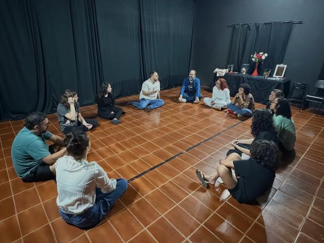

ARTES CÊNICAS
Teatro
No teatro, cada encontro é um convite para experimentar o corpo, a voz e a imaginação. Entre jogos e cenas, o grupo aprende a se expressar, ouvir o outro e construir histórias junto.